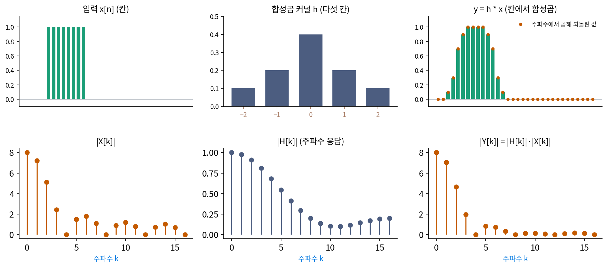

합성곱 정리: 칸에서 합성곱은 주파수마다 곱하기
물결 eₖ는 모든 필터의 고유벡터였다. 그렇다면 신호를 물결로 다시 적어 두면, 필터는 물결마다 수 하나를 곱하는 일로 바뀐다. 이 생각이 실제 계산에서 쓸모가 있으려면 바꾸는 비용까지 따져야 한다. 콘서트홀의 울림을 녹음에 입히는 잔향 효과를 생각해 보자. 1초에 48000칸으로 적은 소리 1초에, 2초 동안 이어지는 울림의 합성곱 커널(96000칸)을 정의대로 걸면 곱셈이 48000 × 96000 = 46억 800만 번 든다. 물결로 옮겼다가 돌아오는 비용을 내고도 이보다 싸게 할 수 있을까?
역사: 빠른 합성곱과 카루소의 나팔
1965년 쿨리와 튜키가 이산 푸리에 변환을 칸 수 N에 대해 N log N 번 남짓의 곱셈으로 계산하는 고속 푸리에 변환을 발표하자, 그 쓰임을 찾는 연구가 줄을 이었다. 이듬해인 1966년 봄, 미국 정보처리학회연합(AFIPS)의 봄 합동 컴퓨터 학술 대회에서 스톡햄(Thomas G. Stockham Jr.)은 「빠른 합성곱과 상관(High-speed convolution and correlation)」을 발표해, 긴 합성곱을 고속 푸리에 변환으로 주파수에 옮겨 곱한 뒤 되돌려 계산하는 방법을 정리했다.
스톡햄은 거꾸로 가는 일도 했다. 1920년대 중반 전기 녹음이 나오기 전, 가수는 커다란 나팔 앞에서 노래했고 나팔 끝의 진동판이 바늘을 흔들어 음반에 홈을 팠다. 테너 카루소(Enrico Caruso)의 녹음이 모두 이 방식이었다. 스톡햄은 나팔이 어떤 주파수는 키우고 어떤 주파수는 깎는 필터처럼 소리를 바꿨다고 보았다. 그렇다면 나팔이 주파수마다 곱한 배율을 짐작해, 그 배율로 주파수마다 나누면 원래 목소리에 가까워질 것이다. 문제는 나팔의 배율을 잴 방법이 없다는 것이었다. 1975년 동료 캐넌(T. Cannon), 잉게브레첸(R. Ingebretsen)과 함께 낸 논문 「디지털 신호 처리를 통한 블라인드 디컨볼루션」의 방법은, 녹음된 소리의 스펙트럼을 오래 평균 낸 것과 비슷한 음역의 목소리를 전기로 녹음한 스펙트럼을 비교해 나팔의 배율을 짐작하는 것이었다고 전해진다. 그가 세운 회사 사운드스트림은 1976년 이 방법으로 카루소의 녹음을 되살렸고, RCA가 음반 「카루소: 전설의 연주자」로 냈다. 녹음 과정을 필터 하나로 보는 모델이 지나치게 단순하다는 비판도 있다.
칸 4개로 손계산
칸 4개 고리에서 x = (3, 1, 0, 0)을 자기 ½, 양옆 ¼로 흐려 보자. 칸에서 정의대로 하면 칸 0은 ½ × 3 + ¼ × 1 + ¼ × 0 = 1.75이고, 모두 계산하면 y = (1.75, 1.25, 0.25, 0.75)다.
같은 흐림을 물결로 옮겨서 계산해 보자. x의 이산 푸리에 변환은 X = (4, 3 − i, 2, 3 + i)이다. 흐림의 합성곱 커널 (½, ¼, 0, ¼)을 변환하면 H = (1, ½, 0, ½)로, 고유벡터를 찾을 때 손으로 구한 고윳값 1, ½, 0, ½과 같다. 물결마다 곱하면 Y = (4 × 1, (3 − i) × ½, 2 × 0, (3 + i) × ½) = (4, 1.5 − 0.5i, 0, 1.5 + 0.5i)다. Y를 되돌리면 (1.75, 1.25, 0.25, 0.75), 칸에서 한 결과와 같다. 칸에서는 이웃을 곱해 더했고, 물결에서는 같은 번호끼리 곱하기만 했다.
칸에서의 원형 합성곱이 물결 번호마다의 곱셈과 같다는 이 사실을 합성곱 정리 (칸에서 합성곱 = 주파수마다 곱하기 / convolution theorem)라 한다. 물결이 모든 필터의 고유벡터라는 사실을 계산의 말로 옮긴 것이다.
잔향 효과로 돌아가 보자. 소리와 합성곱 커널을 2¹⁸ = 262144칸 고리에 올려(칸에서 합성곱한 결과는 48000 + 96000 − 1 = 143999칸이다) 고속 푸리에 변환을 세 번(소리, 합성곱 커널, 되돌리기) 하고 주파수마다 한 번씩 곱한다. 반으로 나누는 고속 푸리에 변환 한 번의 복소수 곱셈을 (262144/2) × 18 = 2,359,296번으로 어림하면 모두 7,340,032번이다. 46억 번과 비교하면 복소수 곱셈 하나를 실수 곱셈 넷으로 쳐도 150배 넘게 적다. 고리를 결과보다 길게 잡은 까닭은 아래 문제 8에서 따진다.

ML에서: 푸리에 신경 연산자는 주파수마다 곱하는 무게를 배운다
물의 흐름이나 열의 퍼짐을 푸는 수치 계산은 느리다. 리쭝이(Zongyi Li)와 동료들의 푸리에 신경 연산자(Fourier Neural Operator, 국제 학습 표현 학회 ICLR 2021)는 이 계산을 신경망으로 흉내 내면서, 층 하나를 합성곱 정리 그대로 짰다. 특징을 고속 푸리에 변환으로 물결에 옮기고, 낮은 쪽 물결 몇 개(kₘₐₓ개)만 남겨 물결마다 배우는 복소수 무게를 곱한 뒤 되돌린다. 여기에 칸마다 따로 거는 선형 변환을 더하고 활성화 함수를 지난다. 물결마다 곱하는 무게는 배우는 주파수 응답이다. 논문은 버거스 방정식, 다아시 흐름, 나비에–스토크스 방정식에서 이 신경망이 이전의 학습 기반 풀이보다 정확하고 전통적인 풀이보다 최대 천 배까지 빠르며, 낮은 해상도로 학습한 모델을 높은 해상도 격자에 그대로 쓸 수 있다고 보고했다. 격자를 바꿔도 같은 무게를 쓸 수 있는 까닭은 아래 문제 9에서 직접 확인한다.
문제 7. 이퀄라이저 두 대
노래를 저음·중음·고음 세 대역으로 나누면 세기가 (4, 2, 1)이다. 이퀄라이저 1은 대역마다 (1, 0.5, 2)배, 이퀄라이저 2는 (0.5, 1, 1.5)배 한다. (가) 1을 거친 뒤 2를 거치면 세기는? 순서를 바꾸면? (나) 두 대를 한 대로 합치면 배율은? (다) 칸 8개 고리에서 x = (0, 0, 4, 2, 0, 0, 0, 0)을 흐림(자기 ½, 양옆 ¼) 뒤 차분(자기 − 바로 앞 칸)에 걸 때와, 차분 뒤 흐림에 걸 때를 비교하라. 두 필터를 합성곱 커널 하나로 합칠 수 있는가?

(가)는 1을 거치면 (4, 1, 2), 2를 거치면 (2, 1, 3)이요. 거꾸로 하면 (2, 2, 1.5)를 거쳐 (2, 1, 3)이고요. 같네요. (나)는 (0.5, 0.5, 3)배요.

대역마다 수를 두 번 곱하는 거니까 순서가 상관없지. (다)는 칸에서 해야 하니까 다를 수도 있어. 이웃을 섞는 연산 둘이잖아.

직접 해 봐요.

흐림 뒤 차분이 (0, 1, 1.5, −0.5, −1.5, −0.5, 0, 0), 차분 뒤 흐림도 똑같아. 칸에서는 이웃을 섞는데도 순서가 상관없네.

두 필터를 물결로 보면 무엇을 하고 있죠?

물결마다 흐림의 고윳값과 차분의 고윳값을 곱하는 거예요. 수 둘의 곱이니까 순서가 상관없고요. 이퀄라이저랑 같은 구조네요.
그럼 두 필터를 한 대로 합치는 건요?
두 고윳값을 곱한 것을 되돌린 커널이면 되겠죠. 그런데 칸에서는 어떻게 생겼을까요?

두 합성곱 커널을 합성곱하면 되지 않아? 해 보니 (0.25, −0.25, −0.25, 0, 0, 0, 0, 0.25)야. 이걸 x에 걸어도 (0, 1, 1.5, −0.5, −1.5, −0.5, 0, 0)이 나와.

사진 앱에서 흐림 효과랑 선명하게 효과를 어떤 순서로 눌러도 결과가 같았던 게 이거였구나. 밝기를 칸마다 다르게 바꾸는 효과를 끼우면 달라지겠지만요.
문제 8. 고리로 감기는 합성곱
합성곱 커널 h 는 「자기 + 바로 앞 칸」이다(h[0] = 1, h[1] = 1). (가) x = (1, 2, 3, 4) 를 칸 4개 고리에서 합성곱 정리로(물결로 옮겨 곱하고 되돌려) 계산하라. (나) 끝 너머를 0 으로 보는 보통의 합성곱 결과와 비교하라. (다) 둘을 같게 하려면 어떻게 해야 하는가? x = (1, 2, 3, 0) 으로 하면 어떻게 되는가? (위젯 3의 「문제 8 불러오기」 뒤 칸 수를 바꿔 보자.)
(가)는 (5, 3, 5, 7)이 나와요. (나)의 보통 합성곱은 (1, 3, 5, 7, 4)예요. 칸 1, 2, 3은 맞는데 칸 0이 5 대 1이고, 보통 합성곱에는 다섯째 칸 4도 있어요. 합성곱 정리가 틀린 건가요?
칸 0에 나온 5는 무엇과 무엇을 더한 거죠?

자기 1과 바로 앞 칸… 고리라서 칸 0 바로 앞이 칸 3이에요. 1 + 4 = 5. 보통 합성곱의 다섯째 칸 4가 갈 자리가 없어서 칸 0으로 감겨 들어온 거네요.
합성곱 정리는 고리 위의 합성곱에 대한 거니까 틀린 건 아니야. 고리라는 조건을 빼고 쓰면 안 되는 거지.
(다)는요? 감겨 들어가지 않게 하려면요?
결과가 다섯 칸이니까 0을 하나 붙여(제로 패딩) 칸 5개 고리로 하면 감길 게 없겠죠. 계산하면 (1, 3, 5, 7, 4)로 맞아요. 6칸이면 (1, 3, 5, 7, 4, 0)이고요.
x = (1, 2, 3, 0)은요?
칸 4개 고리 그대로 (1, 3, 5, 3)이 나오는데, 보통 합성곱 (1, 3, 5, 3, 0)과 앞 넷이 같아요. 어, 패딩을 안 했는데 맞았네요.
왜 맞았을까요? 감겨 들어가는 값을 봐요.

끝 칸이 0이라 감겨 들어갈 값이 0이었던 거예요. 맞은 게 운이었어요.

그럼 늘 맞으려면?
결과 길이가 입력 길이 + 합성곱 커널 길이 − 1을 넘지 않도록 제로 패딩해야 늘 맞아.

그래요. 잔향 계산에서 143999칸짜리 결과를 262144칸 고리에서 계산한 게 그 제로 패딩이에요.

시계 산수에서 12시 다음이 1시라서 생기는 일이랑 같네. 13을 쓰고 싶으면 시계를 크게 만들어야 하고.
문제 9. 푸리에 신경 연산자 한 층
칸 64개 격자 위의 신호에 푸리에 신경 연산자 한 층을 흉내 낸 연산을 건다. 물결 k = 0 … 11 의 12개만 남겨 물결마다 정해진 복소수 무게 R[k] 를 곱하고(씨앗 3으로 뽑은 값, |R[5]| = 0.3215), 나머지 물결은 버린 뒤 되돌린다. (가) cos(2π·5n/64) 와 cos(2π·20n/64) 를 넣으면 무엇이 나오는가? (나) 같은 무게를 칸 128개 격자에 그대로 쓰면 cos(2π·5n/128) 의 출력은? (다) 칸 하나를 넣었을 때의 응답은 몇 칸에 퍼지는가? 채널 하나에 배우는 수는 몇 개인가?
(가)는 k = 5 출력이 진폭 약 0.32인 물결이고, 4.697칸 밀려 있어요. k = 20은 0이에요. 버린 물결이니까요.
높이는 |R[5]|만큼, 밀린 양은 R[5]의 각도만큼이야. 한 물결 안에서 높이와 위상만 바꾸고 다른 물결로 새어 나가지 않아.
(나)는요? 칸이 두 배로 촘촘해졌는데, 무게 R[k] 12개는 칸 64개 때와 같은 값이에요.
칸 3칸짜리 합성곱 커널이면 칸이 촘촘해질 때 보는 범위가 반으로 줄어서 다른 일을 하잖아요. 그런데 이건 무게가 칸이 아니라 「고리를 다섯 번 도는 물결」에 붙어 있으니까, 격자가 바뀌어도 같은 물결에 같은 무게예요. 계산해도 진폭 0.3215로 같아요.
(다)는 칸 하나 응답이 64칸 모두에서 0이 아니야. 칸에서 보면 격자 전체만큼 넓은 합성곱 커널이네.
그럼 배울 수도 64개야?
아니, 배우는 수는 복소수 12개, k = 0은 실수라 실수로 23개뿐이야. 64칸짜리 커널을 칸마다 배우면 64개가 필요하고.
그래요. 멀리 떨어진 칸끼리도 한 층에서 영향을 주고받으면서 배울 수는 적고, 물결 번호에 붙은 무게라 해상도를 바꿔도 같은 뜻을 지켜요. 대신 버린 높은 물결은 이 층에서 다룰 수 없죠. 높은 물결은 칸마다 거는 선형 변환과 활성화가 다뤄요.

사진 보정 지시로 치면 「굵은 줄무늬를 두 배로」는 사진을 줄였다 키워도 뜻이 같은데, 「3픽셀 옆을 더해라」는 사진 크기가 바뀌면 뜻이 달라지네요. 앞의 지시가 물결 번호에 붙은 무게, 뒤의 지시가 칸에 붙은 합성곱 커널이고요.